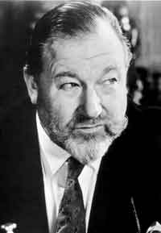

Wednesday, January the 6th, 2016
back to: title, date or indexes
Last week we held a funeral service for the parish wolf, although none of us is sure if it is really dead. Its howling has not been heard for twelve years, though, and under our laws a death certificate can be issued for a missing wolf after just five years. The general feeling in the parish was summed up by the sexton in a notice nailed, Luther fashion, to the door of the church. Even in the absence of a corpse, it would be for the good of the parish if obsequies were held. This was the gist of his notice, though it was couched in the mighty prose he deployed even when writing nature notes for the parish newsletter, and he did not on any account use the word closure.
One reason the sexton is so persuasive is that his appearance and bearing are strongly reminiscent of the actor James Robertson Justice (1907–1975). This is no accident. Over the years, the sexton has worked hard to imitate that booming voice, and he has undergone cosmetic surgery the better to ape the appearance of the man who, when not appearing in films, kept busy as a naturalist, racing driver, and falconry expert.

Before dawn on the morning of the funeral there was a teeming downpour. The rain had ceased by the time we gathered in the churchyard, but the pugton trees were drenched, water droplets dripping from the tiny grey spongy buds, each bud like the brain of a homunculus. An extraordinary number of puddles had formed on the paths, and there are many paths converging on St Bibblydibdib's, for it is the only church for miles around, all others having been smashed to ruination by the sexton's predecessor, single-handedly. He was twice the size of the present incumbent, a titan among sextons, and a brute, and the parish has been much quieter since he wilted away and was carted off to a mercy home. No ducks plashed in the puddles, for word had not yet reached them that the parish wolf was dead, or at least thought to be dead, and no duck dared come near for fear of being torn to bits.
I had been asked to read the obsequies, and had prepared what I thought was a pretty speech. I have a weakness for alliteration, and made use of lots of W words, describing the parish wolf as winsome and windswept and waterlogged and wiry and woebegone and witless. There was little truth in any of this, for the signal fact about the wolf was that it was, for the most part, invisible. Kim Fat Goo, the village bus driver, claimed to have seen it crossing the road once or twice, and the preposterous tabloid astrologer Jonathan Cainer, who once spent a week holed up in Old Ma Brimstone's Bed And Breakfast establishment, said that the wolf paid him nocturnal visits in his dingy room, but few of us gave these tales any credence. Yet despite remaining unseen, the wolf was—or had been—a mighty presence in our parish, and I felt it deserved a memorable send-off, with all those W words, even if what I said was inaccurate.
Our vicar had been abducted by a cadre of rogue Tundists and was tied up in a turret somewhere, so the sexton took charge of the service. When it came my turn to speak, no sooner had I propped my notepad on the lectern and cleared my throat than there came a bellowing of cows from the fields adjoining the church. My words were drowned out. The cows bellowed all day and all night and into the next day, for they were Mad Old Farmer Frack's cows, and there were hundreds of them, massive and ungainly and bellowing. The funeral broke up in disarray, and we repaired to a hangar at the village airfield, and we ate cake and macadamia nuts under the shadow of gigantic propellers, and when we emerged, look!, ducks populated the puddles. The parish wolf was dead and gone.
This piece first appeared nine years ago.
Hooting Yard on the Air, February the 14th, 2007 : “Ice Chaos” (starts around 14:03)
Hooting Yard on the Air, January the 14th, 2016 : “Leper Messiah” (starts around 13:48)
Hooting Yard on the Air, March the 21st, 2019 : “Hectic Clanging” (starts around 21:05)